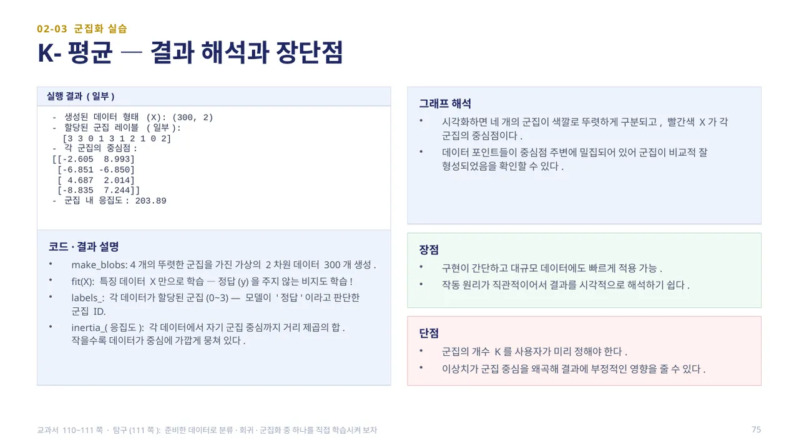
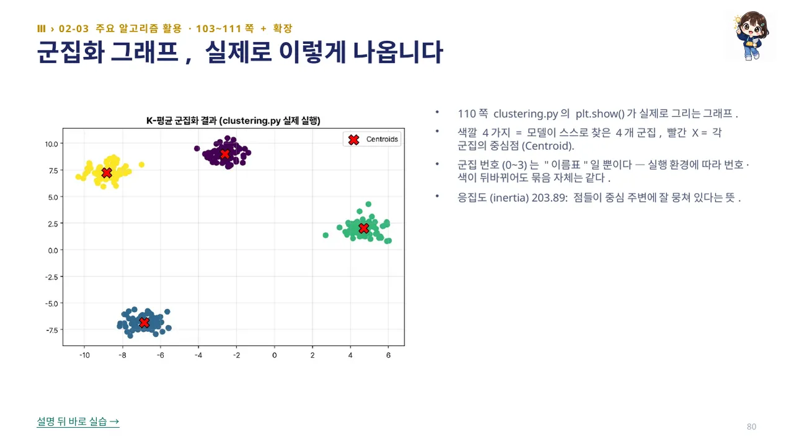
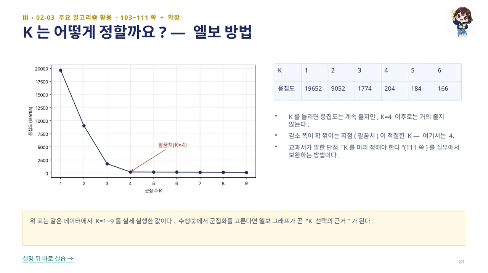

분류·회귀는 정답 레이블(y)을 주고 학습하는 지도 학습이지만, 실제 데이터에는 정답이 없는 경우가 많습니다. 군집화는 데이터 포인트 간의 유사성을 기반으로 숨겨진 패턴이나 그룹을 찾아내는 비지도 학습입니다.
K-평균(K-Means)은 데이터를 K개의 군집으로 나눕니다. 각 데이터를 가장 가까운 군집 중심(Centroid)에 할당하고 중심을 다시 계산하는 과정을, 중심이 크게 변하지 않을 때까지 반복합니다. K는 사용자가 미리 지정합니다. clustering.py는 make_blobs로 가상 데이터를 만들고 KMeans(n_clusters=4, init='k-means++', max_iter=300, random_state=42, n_init=10)으로 fit(X)합니다. (교과서 108~110쪽)

make_blobs는 4개의 뚜렷한 군집을 가진 가상의 2차원 데이터 300개를 생성합니다. fit(X)은 특징 데이터 X만으로 학습합니다 — 정답(y)을 주지 않는 비지도 학습입니다. labels_는 각 데이터가 할당된 군집(0~3) ID이고, inertia_(응집도)는 각 데이터에서 자기 군집 중심까지 거리 제곱의 합으로, 작을수록 데이터가 중심에 가깝게 뭉쳐 있다는 뜻입니다(이 실행에서 203.89).
시각화하면 네 개의 군집이 색깔로 뚜렷하게 구분되고, 빨간색 X가 각 군집의 중심점입니다. 장점은 구현이 간단하고 대규모 데이터에도 빠르게 적용 가능하며 작동 원리가 직관적이라는 것이고, 단점은 군집의 개수 K를 사용자가 미리 정해야 하고 이상치가 군집 중심을 왜곡할 수 있다는 것입니다. (교과서 110~111쪽 · 탐구 111쪽: 준비한 데이터로 분류·회귀·군집화 중 하나를 직접 학습시켜 봅니다)

110쪽 clustering.py의 plt.show()가 실제로 그리는 그래프입니다. 색깔 4가지는 모델이 스스로 찾은 4개 군집이고, 빨간 X는 각 군집의 중심점(Centroid)입니다.
군집 번호(0~3)는 ‘이름표’일 뿐입니다 — 실행 환경에 따라 번호·색이 뒤바뀌어도 묶음 자체는 같습니다. 응집도(inertia) 203.89는 점들이 중심 주변에 잘 뭉쳐 있다는 뜻입니다. 정답 없이 fit(X)만으로 이 그림이 나온다는 것(비지도 학습)을 다시 확인합니다.

K-평균의 단점인 ‘K를 미리 정해야 한다’(111쪽)를 보완하는 방법이 엘보 방법(Elbow Method)입니다. K를 1부터 늘려 가며 응집도를 측정하면, K=1일 때 19652, K=2 9052, K=3 1774, K=4 204, K=5 184, K=6 166으로 K를 늘릴수록 응집도는 계속 줄어듭니다.
그런데 K=4 이후로는 거의 줄지 않습니다. 이렇게 감소 폭이 확 꺾이는 지점(팔꿈치)이 적절한 K이며, 여기서는 4입니다. for문으로 KMeans를 여러 번 돌려 inertia_를 모으면 되는 실험으로, 분류에서 본 K 실험과 같은 패턴입니다. 수행②에서 군집화를 고른다면 엘보 그래프가 곧 ‘K 선택의 근거’가 됩니다.
 인공지능 파이썬 실무
인공지능 파이썬 실무